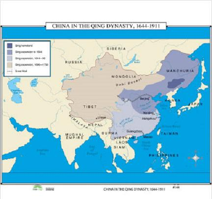

Trong thời gian thực hiện ebook Ấn Độ và Phật Thích Ca, tôi đã có ý định tiếp theo là gõ ít nhất là chương I cuốn Lịch sử văn minh Trung Hoa, nên trong bài Vài lời thưa trước, tôi viết: “Tôi chép trọn chương I: Tổng quan về Ấn Độ, cũng vì một lí do khác nữa. Đó là, nếu như không có điều kiện đọc trọn cuốn Lịch sử văn minh Ấn Độ, chỉ với chương I và chương II thôi, chúng ta cũng tạm đủ để hiểu tại sao trong cuốn Lịch sử văn minh Trung Hoa, Will Durant lại viết câu này: “Trọng tâm của tư tưởng Trang tử cũng như của triết gia nửa thần thoại, Lão tử, mà Trang tử coi là sâu sắc hơn Khổng tử nhiều, là một ảo tưởng huyền bí về một cái vô ngã, rất gần với đạo Phật và các Upanishad trong các kinh Veda, khiến chúng ta phải ngờ rằng các thuyết siêu hình của Ấn Độ đã truyền qua Trung Quốc ít nhất là bốn thế kỉ trước khi đạo Phật vô Trung Quốc...”.”.
Cuốn Lịch sử văn minh Trung Hoa là phần A: Trung Hoa của cuốn III: Viễn Đông (Book III: The Far East – A:
Trước khi dịch cuốn Lịch sử văn minh Trung Hoa, cụ Nguyễn Hiến Lê đã có khá nhiều tác phẩm viết hoặc dịch về triết học và văn học Trung Quốc. Do vậy, so với cuốn Lịch sử văn minh Ấn Độ, cụ có nhiều điều kiện hơn để giúp người đọc dễ hiểu rõ và hiểu đúng nguyên tác hơn. Nhờ “vài chữ hoặc một câu ngắn trong mạch văn” đặt trong dấu [ ] và nhờ phần chú thích của cụ, chúng ta biết được rằng cụ đã đính chính mấy chỗ sai, hoặc chúng ta thấy nhiều chỗ, thay vì dịch theo bản chữ Pháp, cụ lại dịch theo bản chữ Hán mà cụ tìm được, cũng có khi cụ dịch trọn một đoạn mặc dầu trong nguyên tác, tác giả chỉ trích dẫn vài câu ngắn.
Ngược lại, trong các cuốn như Lão tử - Đạo Đức kinh, Khổng tử, Sử Trung Quốc, chúng ta thấy nhiều chỗ cụ Nguyễn Hiến Lê dẫn lời của Will Durant. Ví dụ, trong cuốn Khổng Tử, cụ viết: “Durant, tác giả bộ Lịch sử văn minh, đã nhận định đạo Khổng rất đúng: “Chỉ trong đạo Ki-tô và đạo Phật, chúng ta mới thấy có sự hùng tâm gắng nhân hóa cái bản chất con người như đạo Khổng”. Ngày nay cũng như ngày xưa, dân tộc nào cũng bị cái nạn giáo dục thiên về trí dục quá mà đạo lí suy đồi, tư cách cá nhân cũng như tập thể thấy kém quá thì không có phương thuốc nào công hiệu hơn là cho thanh niên được thấm nhuần đạo Khổng.
Nhưng chỉ một triết lí Khổng học thôi, chưa đủ. Nó rất thích hợp với một quốc gia cần thoát khỏi cảnh hỗn loạn nhu nhược để lập lại trật tự lấy lại sức mạnh, nhưng đối với một quốc gia cần cải tiến hoài để ganh đua trên trường quốc tế thì triết lí đó là một trở ngại”.
Chúng ta đã biết rằng cụ Nguyễn Hiến Lê mua bộ Lịch sử văn minh của Will Durant vào khoảng 1969, và khoảng bốn năm sau cụ viết bộ Trang tử - Nam Hoa kinh, nhưng trong bộ này tôi không thấy cụ dẫn lời nào của Will Durant; hơn nữa, cụ Nguyễn Hiến Lê lại không có chút nghi ngờ nào giống như Will Durant rằng thuyết luân hồi trong các kinh Veda của Ấn Độ đã ảnh hưởng đến học thuyết của Trang tử, nên cụ bảo: “Trang tử không phải là nhà khoa học, mà thời ông sống, đạo Phật chưa truyền qua Trung Hoa, ông không biết các luật khoa học, và luân hồi, nhưng ông đã cảm thấy một cách sâu sắc luật biến hoá trong vũ trụ. Ông nghĩ rằng chúng ta chết rồi có thể biến thành bất kì một vật nào khác như đổi căn nhà (VI.6) mà vật cũng vậy, cũng có thể biến thành người, và dù biến thành gì thì vật và ta rốt cuộc cũng trở về Đạo, “qui căn”, hợp nhất với Đạo. Đó là một tư tưởng đặc sắc của ông, làm căn cho thuyết không phân biệt ta và vật, trọng thiên tính và sự tự do của vạn vật”.
Trong cuốn Sử Trung Quốc, chúng ta thấy cụ Nguyễn Hiến Lê trích dẫn rất nhiều từ bộ Lịch sử văn minh, đặc biệt là từ cuốn Lịch sử văn minh Trung Hoa, và có lẽ do chịu ảnh của Will Durant, trong cuốn đó, cụ trình bày khá chi tiết nền văn minh Trung Hoa. Cụ bảo: “Tôi cho lịch sử Trung Hoa là lịch sử của một nền văn minh vô cùng độc đặc, tuy ra đời sau vài nền văn minh khác: Ai Cập, Lưỡng Hà... nhưng tồn tại lâu nhất”.
°
Trong các đoạn trích dẫn mà cụ Nguyễn Hiến Lê không tìm được nguyên tác, cụ phải dịch từ bản tiếng Pháp – như trên tôi đã nói – có khá nhiều bài thơ; và trong những bài này tôi tìm được nguyên tác vài bài (trong chú thích tôi đã chép nguyên văn và tạm dịch), số còn lại bạn Vvn tìm được hai bài: Bão vũ và Tân An lại. Hai bài đó tôi chép vào Phụ lục. Ngoài ra, vì thấy bản in của nhà Văn Hoá Thông tin có khá nhiều chỗ sai sót, nên bạn Tuanz đã dùng cuốn Lịch sử Văn minh Trung Quốc của Trung Tâm Thông Tin - Đại học Sư phạm - 1990[2] để sửa các chỗ sai sót đó và sửa luôn những lỗi do tôi gõ sai, đồng thời góp ý để tôi chỉnh lại một vài chú thích. Xin chân thành cảm ơn bạn Vvn, bạn Tuanz, và xin trân trọng giới thiệu cùng các bạn.
Goldfish
Tháng 8 năm 2010

Bản đồ Trung Hoa đời Thanh
Giữa những năm 30 của thế kỉ này, khi các đế quốc châu Âu, châu Mĩ, đang đà cường thịnh, khi bản đồ Á Phi còn tô một màu thuộc địa xám xịt, thì Will Durant cho ra bộ LỊCH SỬ VĂN MINH THẾ GIỚI với phần MỞ ĐẦU là lịch sử văn minh các nước phương Đông: Ai Cập, Tây Á, Ấn Độ, Trung Hoa, Nhật Bản…
Hôm nay, ta nghe đâu đó có lời dự báo rằng cán cân kinh tế của các thập kỉ sau sẽ nghiêng về châu Á. Nhưng 55 năm trước, W. Durant đã viết “Tương lai ở phía Thái Bình Dương và chúng ta phải hướng cặp mắt và trí óc về phía đó”. Nhà sử học, nhà bác học Mĩ gốc Pháp này đã cùng vợ bỏ ra gần ba chục năm để nghiên cứu các dân tộc châu Á và phương Đông và đã viết về các quốc gia này với thái độ công bằng, trân trọng. Từ khi sách ra đời đã mấy thập kỉ, nhưng công trình nghiên cứu này ở ta vẫn chưa phổ biến nhiều; trong lúc đó hãy còn một số giờ dạy và một số tài liệu khác vẫn xem nền văn hóa châu Âu mở đầu với Hi-LA là tột đỉnh, là khởi nguyên của mọi nền văn hóa. Quan niệm này đã bị W. Durant phê phán ngay tại nơi nó được phát sinh, là giới sử gia phương Tây.
Trong phần văn minh phương Đông, W. Durant viết khá kĩ về Ấn Độ và Trung Hoa. Hai quốc gia này là nơi phát sinh hai nền văn minh lớn có tác dụng và ảnh hưởng đến hai phía của lục địa châu Á trong đó có Việt
Sự phát triển của Ấn Độ và Trung Hoa trong thập kỉ này, tuy mỗi nước có một đặc điểm riêng, nhưng luôn luôn tập trung sự chú ý của cả loài người, đặc biệt của vùng Đông Nam Á, do sự chuyển mình vươn lên với cả quá trình sôi động và phức tạp của nó. Những con rồng nhỏ chung quanh đang trên đà phát triển, con rồng lớn đang đứng trước sự thách thức lớn lao. Thử đi ngược lại những thời kì lịch sử trước đây của Trung Hoa, Ấn Độ để làm cơ sở, tìm hiểu xu hướng phát triển hiện nay của hai nước láng giềng Việt
Với các giai đoạn lịch sử xa xưa, có điều kiện thử thách, tham bác được nhiều tài liệu, tác giả đã trình bày một cách uyên bác, dẫn chứng các tài liệu phong phú, phân tích tình thế. Với văn hóa và con người Trung Hoa, kể cả người lao động, nghèo khổ, ít học… tác giả đã dành những lời khen ngợi, những cảm tình đặc biệt. Và, ngược lại, tác giả cũng đã phê phán thẳng thắn những tệ nạn của xã hội phong kiến, độc tài…
Tuy nhiên, với thời cận đại, có thể vì chưa đủ tư liệu, thời gian chưa nhiều, tác giả đôi khi ngộ nhận khi phân tích, đánh giá một số sự kiện, nhân vật lịch sử như những phong trào nổi dậy của nông dân, kể cả Thái Bình Thiên Quốc và Nghĩa Hoà Đoàn, về việc làm của những nhà truyền giáo, về vai trò của nhà cách mạng dân chủ ưu tú Tôn Trung Sơn, hay quan hệ giữa chính phủ Quảng Châu với chính quyền Xô Viết…
Nhân đây chúng tôi chân thành cảm ơn gia đình học giả quá cố NGUYỄN HIẾN LÊ cho phép chúng tôi sử dụng bản dịch này.
NXB Văn Hoá Thông Tin
GIỚI THIỆU TÁC GIẢ WIIL DURANT VÀ BỘ LỊCH SỬ VĂN MINH[3]
Trong giới biên khảo, sử gia giữ một địa vị đặc biệt, vì sức làm việc phi thường của họ. Họ kiên nhẫn, cặm cụi hơn hết thảy các nhà khác, hi sinh suốt đời cho văn hoá không màng danh vọng, lợi lộc, bỏ ra từ ba đến năm chục năm để lập nên sự nghiệp. Họ đọc sách nhiều, du lịch nhiều, suy tư nhiều, và nếu họ có ít thành kiến, thì tác phẩm của họ càng lâu đời càng có giá trị, hiện nay ở phương Tây, loại sách về sử được phổ biến rất rộng, có cái cơ muốn lấn át tiểu thuyết.
Chỉ trừ Ấn Độ, dân tộc lớn nào cũng có một số sử gia lớn. Trung Hoa có hai sử gia họ Tư Mã: Tư Mã Thiên (145-?...trước công nguyên) với bộ Sử kí bất hủ gồm 526.500 chữ, chép từ đời Hoàng Đế đến đời Hán Vũ Đế, và Tư Mã Quang (1019-1086) đời Tống với bộ Tư Trị Thông Giám, chép từ đời Chiến Quốc tới hết đời Ngũ Đại (gồm 1362 năm), ngày nào cũng viết hàng chục trang giấy, tới khi hoàn thành sau hai mươi lăm năm làm việc thì những tài liệu chép tay chứa đầy hai căn phòng.
Ả Rập có Abd-er-Rahman Ibn Khaldoun (thế kỉ XIV)[4] trong năm chục năm vừa làm quan vừa viết bộ Thế giới sử mà Toynbee khen là “tác phẩm lớn nhất trong loại đó ở bất kỳ thời đại nào, trong bất kỳ xứ nào”.
Pháp có Augustin Thierry (1795-1856) nghiên cứu sử 40 năm, tới loà mắt mà vẫn tiếp tục làm việc, không viết được thì đọc cho người khác chép. Đồng thời với ông có Michelet bỏ ra ba mươi năm soạn bộ Sử Pháp gồm 28 cuốn.
Anh có Gibbon (1737-1794) bỏ ra 17 năm soạn bộ sử danh tiếng Thời suy sụp của đế quốc La Mã. Đức có Spengler (1880-1936) tác giả của bộ Thời tàn của phương Tây. Ở nước ta chưa có sử gia nào so sánh với những nhà đó được, nhưng Lê Quý Đôn, Phan Huy Chú vẫn còn đáng làm gương cho chúng ta và nếu được sanh ra ở một nước như Trung Hoa chẳng hạn thì sự nghiệp hai vị đó chưa chắc đã kém ai.
Hiện nay hai sử gia nổi danh nhất thế giới là Toynbee (1889…)[5] với bộ A Study of History (Khảo luận về Sử) và Will Durant với bộ The Story of Civillisation (Lịch sử Văn minh). Toynbee là một sử triết gia, có phần sâu sắc hơn Durant, Durant cổ điển hơn, nhằm mục đích phổ biến hơn, như H.G. Wells, tác giả bộ Lịch sử Thế giới, nhưng công trình của ông lớn lao hơn của Wells nhiều, và mặc dầu tính cách khác nhau, đáng được đặt ngang hàng với công trình của Toynbee.
°
° °
William James Durant (thường gọi là Will Durant) sanh năm 1885[6] (hơn Toynbee 4 tuổi) ở North Adams, tiểu bang Massachusettes, trong một gia đình gốc Pháp – Gia Nã Đại, đậu cử nhân triết ở trường Saint Peter, làm phóng viên cho tờ New York Evening Journal, rồi tuân theo lời cha mẹ vô Chủng viện Seton Hall học thêm bốn năm nữa, nhưng tự xét không hợp với với nghề mục sự, ông thôi học, ra làm hiệu trưởng trường Labor Temple School ở New York, tại đó ông dạy triết và sử trong mươi ba năm cho những người lớn có nghề nghiệp muốn trau giồi thêm kiến thức. Hạng học viên đó chỉ chịu ngồi nghe nếu bài giảng hấp dẫn, ông phải soạn bài thật kĩ, bỏ những chi tiết rườm, nhấn mạnh vào những điểm chính, tổng hợp lại cho họ nắm được đại cương, nhờ vậy ông luyện được một lối trình bày sáng sủa, giản dị.
Đồng thời, ông học thêm về sinh lí và triết học ở Đại học Columbia, đậu Tiến sĩ Triết năm 1917, rồi dạy Triết cũng ở Đại học đó một năm.
Bài soạn của ông rất được hoan nghênh; ông gom lại một số, in thành cuốn The Story of Philosophy (Lịch sử Triết học) bán rất chạy, chỉ trong ba năm, nội các nước nói tiếng Anh đã tiêu thụ được hai triệu cuốn, rồi sau được dịch ra tiếng Pháp, Ý, Đức, Nhật, Trung Hoa, Y Pha Nho, Bồ Đào Nha, Ba Lan, Đan Mạch, Do Thái… Ở nước ta, nghe nói có người cũng đương dịch[7]. Thấy thành công, ông quyết tâm chuyên sống bằng cây viết.
Từ năm 1915, sau khi đọc cuốn Introduction to the History of Civilisation mà sử gia Anh Buckle viết chưa xong thì chết, ông đã có hoài bảo tiếp tục công việc đó, nên vừa soạn luận án tiến sĩ ở Đại học Columbia vừa kiếm tài liệu cho bộ Lịch sử Văn minh của ông.
Mười bốn năn sau, năm 1929, ông và bà (nhũ danh là Ariel, một cựu học sinh của ông) mới đem hết tâm trí ra thực hiện hoài bảo chung.
Mục đích của ông bà là tìm hiểu xem tài năng và sức lao động của con người đã giúp cho văn hoá của nhân loại được những gì, óc phát minh nảy nở và tiến bộ ra sao, đạt được những kết quả nào trong mọi khu vực: chính trị, kinh tế, tôn giáo, luân lí, văn học, khoa học, triết học, nghệ thuật; tóm lại vạch rõ những bước tiến của văn minh nhân loại.
Ông cho rằng từ trước các sử gia phương Tây rất ít chú trọng đến văn minh phương Đông, đó là một khuyết điểm lớn:
“Chúng ta sẽ ngạc nhiên nếu được biết tất cả các món nợ tinh thần của chúng ta đối với Ai Cập và phương Đông; nợ về các phát minh hữu ích cũng như về tổ chức chính trị, kinh tế, về khoa học, văn chương, triết học, tôn giáo. Hiện nay châu Á tràn trề một sinh lực mới, càng ngày càng mau đuổi kịp châu Âu và chúng ta có thể đoán trước rằng vấn đề quan trọng của thế kỷ XX sẽ là sự xung đột giữa Đông và Tây; vậy thì viết sử mà hẹp hòi, theo truyền thống cũ, bắt đầu bằng sử Hy Lạp, chỉ chép vài hàng về sử châu Á (…) thì là thiển cận, thiếu hiểu biết, hậu quả có thể tai hại. Tương lai ở phía Thái Bình Dương và chúng ta phải hướng cặp mắt và trí óc về phía đó”.
Lời đó viết năm 1935 trong khi Đức, Ý đương cường thịnh, Anh chưa suy, mà Ấn Độ và Trung Hoa còn là thuộc địa hoặc bán thuộc địa của Âu, quả thật là một nhận định sáng suốt, đáng coi là một lời tiên tri.
Vì có chủ trương đó, ông mấy lần du lịch khắp thế giới (năm 1927 du lịch châu Âu, năm 1930 đi vòng quanh thế giới để tìm hiểu Ai Cập, Tây Á, Ấn Độ, Trung Hoa, Nhật Bản; năm 1932 lại du lịch Nhật Bản, Mãn Châu, Tây Bá Lợi Á, Nga và Ba Lan; năm 1948 du lịch Thổ Nhĩ Kỳ, Irak, Ba Tư, Ai Cập, ấy là chưa kể nhiều cuộc du lịch khác ở Ý, Pháp, Y Pha Nho…), bỏ ra tám năm nghiên cứu về phương Đông và mở đầu bộ sử bằng lịch sử phương Đông.
Bố cục tác phẩm như sau:
1. Di sản phương Đông: văn minh Ai Cập và Cận Đông (tức Tây Á) cho tới khi Đại đế Alexandre của Hi Lạp mất; sử Ấn Độ, Trung Hoa, Nhật Bản cho tới đầu thế chiến vừa rồi.
2. Di sản cổ điển của phương Tây: văn minh Hi Lạp, La Mã và miền Cận Đông dưới thời đô hộ của Hi lạp và La Mã.
3. Di sản thời Trung cổ: châu Âu theo Kitô giáo và châu Âu thời Trung cổ, văn minh Byzane, văn minh Ả Rập và Do Thái ở châu Á, châu Phi và Y Pha Nho, thời Phục hưng Ý.
4. Di sản của châu Âu: sử văn minh các quốc gia châu Âu từ thời Cải cách tới thời Cách mạng Pháp.
5. Di sản của châu Âu hiện đại: các phát minh khoa học, chính trị, triết lí, luân lí, văn học, nghệ thuật từ Napoléon tới ngày nay.
Nhưng ông bà chỉ thực hiện được bốn phần trên, và ngừng lại ở ngày 14-7-1789, ngày 8.000 dân
Ông bà biết rằng ngừng lại ở lúc nhân loại bắt đầu vào một giai đoạn có rất nhiều biến cố lớn lao về mọi phương diện: chính trị, kinh tế, khoa học, triết học, văn học… là điều vô lí; nhưng ông bà nhớ rằng mình đã quá già rồi (ông đã 80 tuổi), nên xin nhường công việc viết tiếp cho lớp người trẻ hơn, mà chỉ soạn thêm một cuốn khoảng 200 trang để thay phần kết, gom những nhận xét cùng suy tư của ông bà về lịch sử văn minh. Cuốn đó nhan đề là Bài học của lịch sử.
Ông biết rằng công trình phân tích và tổng hợp mấy ngàn năm lịch sử nhân loại đó lớn lao quá, một người làm thì thế nào cũng lầm lẫn nhiều mà sẽ trở thành cái đích cho các nhà chuyên môn trong từng ngành tha hồ chỉ trích. Ông nhớ lời khuyên của Ptahhotep[8] năm ngàn năm trước: “Trong một hội nghị, sẽ có một nhà chuyên môn chỉ trích anh đấy. Có điên thì mới nói lan man về mọi vấn đề”.
Mà thực vậy, có người thấy ông khởi công đã cho ông là điên, ngờ rằng ông làm không xong hoặc chẳng ra cái quái gì cả. Nhưng ông cứ can đảm bước tới, tin chắc rằng phải có một công trình tổng hợp văn minh để nhân loại hiểu sự quí báu của văn minh, nó là di sản của mọi dân tộc chứ chẳng của riêng dân tộc nào. “Lịch sử nhân loại như một dòng sông đôi khi đầy máu và xác những người chém giết nhau, cướp bóc lẫn nhau; mà các sử gia chỉ thường chép những hành động đó thôi. Nhưng trên bờ còn có những người khác cất nhà, làm vườn, nuôi con, làm thơ”. Các sử gia khác bi quan vì không nhìn lên bờ; ông sẽ chép công việc của những người xây cất trên bờ. Việc phải làm thì làm, nếu cầu toàn thì không khi nào nên việc và hai ông bà hăng hái làm việc mỗi ngày tới mười bốn giờ.
Nhưng như thế không có nghĩa rằng ông không thận trọng. Trái lại, như trên tôi đã nói, ông di du lịch và nghiên cứu tám năm để tìm hiểu tâm hồn người phương Đông; viết xong về sử phương Đông ông lại nhờ các nhà chuyên về phương Đông coi lại bản thảo, chẳng hạn nhờ ông Ananda, Coomaraswamy ở Viện Mĩ thuật Boston đọc phần về Ấn Độ, nhờ giáo sư H.H. Gowen ở Đại học Washington và ông Upton Close coi lại hai phần về Trung Hoa và Nhật Bản.
Mặc dù vậy, ông vẫn nhận rằng tác phẩm không thể nào hết lỗi mà chỉ một mình ông chịu trách nhiệm. Và trong lời Mở đầu của toàn bộ, ông xin lỗi trước các học giả Do Thái, Ả Rập, Ấn Độ, Trung Hoa, Nhật Bản nếu những điều ông viết về Yahveh, Allah, về triết lí Ấn Độ, Trung Hoa, về văn minh Nhật Bản không làm vừa ý họ vì sơ lược quá.
Vợ con ông phải tiếp tay với ông. Gia đình ông ở
Ông vạch trước chương trình cho mấy chục năm, giữ đúng được lời hứa với nhà xuất bản, cứ đúng ngày là giao bản thảo, không hề trễ. Thật đáng phục.
Bản tiếng Anh gồm mười cuốn: cuốn đầu về di sản phương Đông soạn xong năm 1935[9] (mất 6 năm), cuốn thứ hai về Hi Lạp xong năm 1939 (4 năm), từ đó cứ 3 hay 4 năm xong một cuốn đến năm 1965 trọn bộ.
Cuốn đầu ra rồi, không ai còn nghi ngờ khả năng của ông nữa, và khi cuốn cuối in xong, ai cũng phải phục ông: sự nghiệp của ông ngang hàng với sự nghiệp các sử gia danh tiếng của nhân loại; cuốn thứ ba: César và Ki Tô viết rất hay, tổng hợp rất khéo; các cuốn về văn minh phương Tây thời Cận đại, tài liệu rất dồi dào, soạn rất công phu: đời sống, hành vi cùng tư tưởng và sự nghiệp các danh nhân như Léonard de Vinci, Mozart, Voltaire, Rousseau, Goethe được chép lại rất đầy đủ, mỗi nhà từ 30 đến 100 trang.
Tác phẩm được hoan nghênh nhiệt liệt, các trường Đại học ở Mỹ đều khuyên sinh viên đọc để mở mang kiến thức. Nhà Payoy ở Pháp đã nhờ sáu người dịch từ mười lăm năm trước; nhà Rencontre ở Lausanne (Thuỵ Sĩ) cuối năm 1970 mới in xong toàn bộ bản tiếng Pháp gồm 33 cuốn[10], như vậy mỗi cuốn bản tiếng Anh gồm ba hoặc bốn cuốn bản tiếng Pháp.
Trước sau ông bà đã bỏ ra 39 năm (1929-1967) để thực hiện công trình, không kể những năm ông kiếm tài liệu khi còn học ở Đại học
Trong non bốn chục năm đó, ông bà chỉ mong đến ngày viết xong được hàng cuối cùng để được nghỉ ngơi. Nhưng khi ngày đó tới thì ông bà lại thấy đời như trống rỗng: thiếu một mục đích là đời mất một hướng đi, một ý nghĩa. Ai đã cầm bút viết luôn mấy chục năm đều có tâm trạng đó: bỏ cây bút xuống là thấy buồn. Ta thấy nỗi buồn đó của ông bà trong lời chào chúng ta:
“Chúng tôi xin cảm ơn các vị đã theo dõi chúng tôi trong bao nhiêu năm nay, cùng đi một khúc đường hoặc trọn khúc đường với chúng tôi. Suốt thời gian đó, không lúc nào chúng tôi quên các vị đó cả. Bây giờ thì chúng tôi xin vĩnh biệt”.
NGUYỄN HIẾN LÊ
Chú thích:
[1] Các bạn có thể xem trực tuyến hoặc tải về tại http://www.scribd.com/doc/20351263/The-Story-of-Civilization-01-Our-Oriental-Heritage
[2] Cuốn Lịch sử văn minh Trung Hoa - trong Hồi kí và Đời viết văn của tôi, cụ Nguyễn Hiến Lê gọi tắt là Văn minh Trung Hoa – có lẽ dịch trong năm 1974, nhưng “chưa kịp in thì thay đổi chế độ”, như lời cụ bảo. Không hiểu tại sao bản in của nhà Đại học Sư phạm lại là Lịch sử Văn minh Trung Quốc, và trong ngay trong cuốn Lịch sử Văn minh Trung Hoa của nhà Văn hoá Thông tin mà chúng ta ta đang đọc đây, trong “Lời nhà xuất bản” chúng ta cũng thấy gọi là Lịch sử văn minh Trung Quốc?
[3] Bài giới thiệu này NXB trích trong bài Tựa cuốn Lịch sử Văn minh Ấn Độ, cụ Nguyễn Hiến Lê viết tại Sài Gòn ngày 1.1.1971. (Goldfish).
[4] Sinh năm 1332, mất năm 1406. (Goldfish).
[5] Theo Wikipedia thì Toynbee sinh ngày 14-4-1889 và mất ngày 22-10-1975. (Goldfish).
[6] Theo Wikipedia thì Will Durant sinh ngày 5-11-1885 và mất ngày 7-11-1981. Sau khi ông mất, hai cuốn sách nữa của Durant được xuất bản trong những năm gần đây là Những bộ óc và ý tưởng vĩ đại nhất mọi thời đại (2002) và Những anh hùng của lịch sử: Lịch sử tóm tắt văn minh từ thời cổ đại đến cận hiện đại (2001). (Goldfish).
[7] Có lẽ cụ Nguyễn Hiến Lê muốn nói đến cuốn Câu chuyện Triết học, Trí Hải và Bủu Đích dịch, Nha Tu thư và Sưu Khảo Viện Đại học Vạn Hạnh, Sài Gòn, in lần thứ nhất năm 1971. (Goldfish).
[8] Một tể tướng Ai Cập ở thế kỷ 29 trước công nguyên, tác giả một cuốn về phép trị dân và cách xử thế.
[9] In trong thế chiến thứ nhất và trong khi in chắc ông có thêm ít tài liệu mới nhất.
[10] …Khổ 12x18 phân, mỗi cuốn trên dưới 450 trang (trừ cuốn Bài học của lịch sử), bìa dày, có 32 tấm hình, giá 19 quan Pháp. Từ cuốn XX, ông bà kí tên chung: Will và Ariel Durant.
Khi nhà vua biết trị nước thì thi sĩ tự do
làm thơ, kép hát tự do đóng trò, các viên Thái
sử chép đúng sự thực, các đại thần biết can
gián, người nghèo không giấu nỗi bất bình
về thuế má quá cao, thư sinh học bài lớn
tiếng, người làm thợ thích và tìm kiếm công
việc, dân bày tỏ ý kiến về mọi việc và ông
già, bà cả phàn nàn đủ thứ.
(Lời Thiệu Công tâu với vua Lệ Vương
vào khoảng năm 845 trước Tây lịch)[1]
[1] Will Durant bảo đã trích trong cuốn Outline History of China của Gowen and Hall. Chúng tôi không kiếm được nguyên văn chữ Hán. Lệ Vương là một ông vua đời